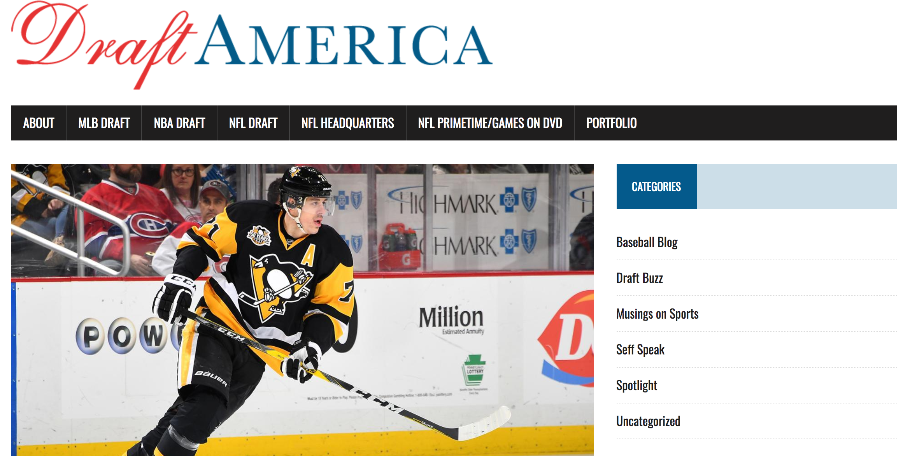

MICHAEL SEFF
Email
GitHub
LinkedIn
WEB PROJECTS
The ScoreFinder app allows football fans to look at any NFL game from the 2016 season, leave comments on individual games to interact with other fans, save their favorite teams, and visit customized team pages. The back-end language used for this project was Ruby on Rails.
This is a single-player Wheel of Fortune app. Users must enter their name, then once they begin a new game, they can spin, buy a vowel, or solve the puzzle.
OTHER PASSION PROJECTS

This is my blog, where I write in-depth articles about sports - primarily baseball and football, with a heavy focus on data research and statistical analysis. There, you can also find my professional work samples.